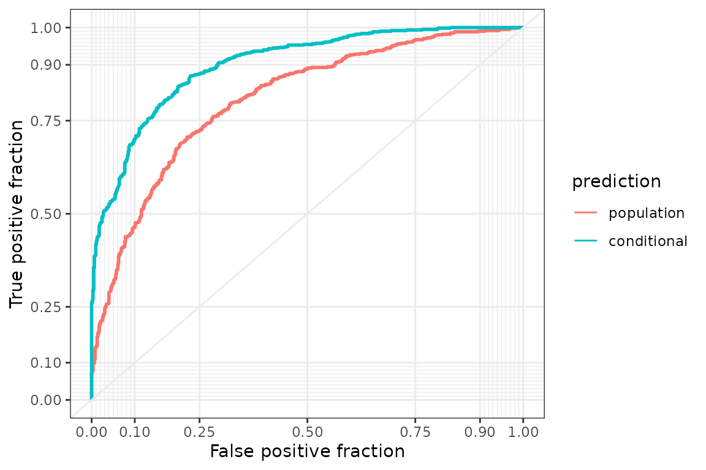

A fitted choice model answers questions about choice probabilities:
which of two train trips a traveler is likely to book, how the support
for a wind-power project changes with the compensation, and how well the
model predicts the choices of deciders that were not used for
estimation. In the probit model introduced in the vignette Get
started with RprobitB, the choice probability of an alternative is
the probability that its latent utility exceeds the utilities of the
other alternatives, and it depends on the covariates of the occasion and
on the parameters. predict() evaluates these probabilities
under every retained posterior draw and averages them, so that the
predictions account for the posterior uncertainty about the parameters
(Gelman et al.
1996). This vignette covers predictions for the population
and for individual deciders, scenarios, out-of-sample prediction,
residuals, and marginal effects. The examples use data sets of the
mlogit package (Croissant 2020), the
choicedata package (Oelschläger 2026), and the
MASS package (Venables and Ripley 2002).
A random price coefficient
The Train data of the mlogit package
contain about a dozen choices by each of 235 Dutch travelers between two
hypothetical train trips that differ in price, travel time, number of
changes, and comfort class (Ben-Akiva et al. 1993). As in the
vignette Get
started with RprobitB, the prices are converted to euro and the
travel times to hours. That vignette fits one price coefficient for all
travelers. Here the price coefficient is a normal random effect, as
introduced in the vignette Modeling
preference heterogeneity: every traveler has an individual price
coefficient, drawn from a normal population distribution whose mean and
variance are estimated. The individual draws are saved because the
conditional predictions below use them. Thinning keeps 50 of the 750
post-warmup draws of each chain, 100 draws in total, which is enough for
stable posterior means and keeps the predictions below fast.
library(RprobitB)
set.seed(1)
data("Train", package = "mlogit")
Train$price_A <- Train$price_A / 100 / 2.20371
Train$price_B <- Train$price_B / 100 / 2.20371
Train$time_A <- Train$time_A / 60
Train$time_B <- Train$time_B / 60
model <- fit(
choice ~ price + time + change + factor(comfort) | 0,
data = Train,
random_effects = "price",
column_decider = "id",
column_occasion = "choiceid",
iterations = 1500,
warmup = 750,
thin = 15,
chains = 2,
save_individual_draws = TRUE,
progress = FALSE
)
summary(model)
#> Bayesian probit choice model
#> Formula: choice ~ price + time + change + factor(comfort) | 0 | 0
#> Samples: 50 retained per chain, 2 chains
#>
#> variable mean mode sd rhat ess_bulk
#> beta[time] -1.7814 -1.7580 0.1205 1.093 92.5
#> beta[change] -0.3376 -0.3500 0.0427 0.988 91.8
#> beta[factor(comfort)1] -0.6803 -0.6775 0.0540 1.002 130.6
#> beta[factor(comfort)2] -1.9188 -1.9416 0.0993 0.997 81.0
#> mu[price] -0.3923 -0.3941 0.0278 1.045 48.7
#> Omega[price,price] 0.0966 0.0931 0.0154 1.078 26.9mu[price] and Omega[price,price] are the
mean and the variance of the price coefficient across the population.
The square root of the posterior mean of the variance is 0.311, against
a posterior mean of -0.392 for mu[price]: price sensitivity
differs between travelers, which the predictions below take into
account.
Population predictions
By default, predict() returns one row per choice
occasion with the identifiers, the most probable alternative in
.prediction, and the posterior mean probability of every
alternative. These population predictions integrate over the estimated
population distribution of the random coefficient, so they apply to any
traveler from the population, not only to those in the data.
population <- predict(model)
head(population)
#> id choiceid .prediction probability_A probability_B
#> 1 1 1 A 0.8758825 0.1241175
#> 2 1 2 A 0.7089943 0.2910057
#> 3 1 3 A 0.8103538 0.1896462
#> 4 1 4 B 0.1584512 0.8415488
#> 5 1 5 A 0.6889428 0.3110572
#> 6 1 6 B 0.1649000 0.8351000uncertainty = TRUE adds the posterior standard deviation
and an equal-tailed credible interval of every probability, here at the
90% level. The intervals reflect the posterior uncertainty about the
parameters, not the randomness of the choice.
head(predict(model, uncertainty = TRUE, level = 0.9))
#> id choiceid .prediction probability_A probability_B sd_A sd_B
#> 1 1 1 A 0.8758825 0.1241175 0.01820053 0.01820053
#> 2 1 2 A 0.7089943 0.2910057 0.02078762 0.02078762
#> 3 1 3 A 0.8103538 0.1896462 0.02204639 0.02204639
#> 4 1 4 B 0.1584512 0.8415488 0.01807750 0.01807750
#> 5 1 5 A 0.6889428 0.3110572 0.02306812 0.02306812
#> 6 1 6 B 0.1649000 0.8351000 0.02045077 0.02045077
#> lower_A lower_B upper_A upper_B
#> 1 0.8458549 0.09741844 0.9025816 0.1541451
#> 2 0.6738162 0.25751461 0.7424854 0.3261838
#> 3 0.7753907 0.15454084 0.8454592 0.2246093
#> 4 0.1319420 0.80994462 0.1900554 0.8680580
#> 5 0.6537258 0.27240732 0.7275927 0.3462742
#> 6 0.1305137 0.80171684 0.1982832 0.8694863Conditional predictions for fitted deciders
The dozen choices of a traveler are informative about their
individual price coefficient. coef(level = "individual")
returns the posterior mean of every traveler’s coefficient, and
predict(type = "conditional") uses the individual draws
instead of the population distribution. Conditional predictions exist
only for the deciders in the fitted data, and they are usually sharper
because they use the decider’s own choices. This partial pooling is the
main argument for hierarchical Bayesian choice models (Allenby and Rossi 1998;
Huber and Train 2001).
head(coef(model, level = "individual"))
#> price
#> 1 -0.26940692
#> 2 -0.75192882
#> 3 -0.63361658
#> 4 -0.42940736
#> 5 -0.01203728
#> 6 -0.06736097
conditional <- predict(model, type = "conditional")
head(conditional)
#> id choiceid .prediction probability_A probability_B
#> 1 1 1 A 0.9472914 0.05270857
#> 2 1 2 A 0.6403897 0.35961026
#> 3 1 3 A 0.8512142 0.14878583
#> 4 1 4 B 0.1582555 0.84174454
#> 5 1 5 A 0.6095824 0.39041762
#> 6 1 6 B 0.1071964 0.89280359The hit rate, the share of correctly predicted choices in the fitted data, is one measure of the gain:
observed <- model.frame(model)$choice
hit_rate <- c(
population = mean(population$.prediction == observed, na.rm = TRUE),
conditional = mean(conditional$.prediction == observed, na.rm = TRUE)
)
hit_rate
#> population conditional
#> 0.7108228 0.7869580The traveler’s own choices raise the hit rate from 0.71 to 0.79. The
hit rate evaluates the predictions at a single threshold, a probability
of one half. A ROC curve compares them at every threshold: as the
threshold for predicting trip B decreases from one to zero,
the curve plots the share of B choices predicted correctly
against the share of A choices wrongly predicted as
B. The area under the curve is the probability that a
randomly chosen B occasion receives a higher B
probability than a randomly chosen A occasion. The
plotROC package (Sachs 2017) draws the curves with
ggplot2 (Wickham 2016).
library(ggplot2)
library(plotROC)
roc_data <- rbind(
data.frame(
prediction = "population", chose_B = as.integer(observed == "B"),
probability = population$probability_B
),
data.frame(
prediction = "conditional", chose_B = as.integer(observed == "B"),
probability = conditional$probability_B
)
)
roc_data$prediction <- factor(
roc_data$prediction, levels = c("population", "conditional")
)
roc_plot <- ggplot(
roc_data, aes(d = chose_B, m = probability, color = prediction)
) +
geom_roc(n.cuts = 0) +
style_roc()
roc_plot
The conditional curve lies above the population curve, and the area under the curve rises from 0.77 to 0.87.
Scenario analysis in a stated choice experiment
A scenario predicts the choice probabilities for modified attributes,
the typical use of a stated choice experiment. Near Setskog in Norway,
308 residents were asked six times to choose between two plans for a
proposed wind-power project and the status quo without the project,
alternative 1 (Dugstad et al. 2024). The plans
varied the number and height of the turbines, the routing of the power
line, and an annual reduction in municipal taxes offered as
compensation. The study also measured each respondent’s collective
psychological ownership of the affected area, a standardized score of
how strongly they feel that the landscape belongs to the residents. The
score does not vary across alternatives and therefore enters the second
part of the formula, which gives it one coefficient per plan relative to
the status quo:
wind_formula <- choice ~ turbines + height + powerline + compensation |
psychological_ownership
data("wind_power_choice", package = "choicedata")
wind <- fit(
formula = wind_formula,
data = wind_power_choice,
column_decider = "respondent",
column_occasion = "occasion",
iterations = 10000,
warmup = 5000,
thin = 5,
chains = 2,
progress = FALSE
)
coef(wind)[c("beta[compensation]", "beta[psychological_ownership_2]")]
#> beta[compensation] beta[psychological_ownership_2]
#> 0.000903575 -0.444736414The posterior probability that the compensation coefficient is
positive is 1.00, and that the ownership coefficient of the first plan
is negative 1.00: compensation makes a plan more attractive, and
residents with a stronger feeling of ownership are less willing to leave
the status quo. What would happen if the municipality doubled the
compensation? newdata accepts a data frame in the layout of
the fitted data, with or without the response column. The scenario below
doubles the compensation of both plans in the first four choice tasks
and compares the probability of the status quo before and after.
scenario <- model.frame(wind)[1:4, ]
scenario$choice <- NULL
scenario$compensation_2 <- 2 * scenario$compensation_2
scenario$compensation_3 <- 2 * scenario$compensation_3
status_quo <- cbind(
before = predict(wind)$probability_1[1:4],
after = predict(wind, newdata = scenario)$probability_1
)
status_quo
#> before after
#> [1,] 0.4102958 0.2813607
#> [2,] 0.3766450 0.2881957
#> [3,] 0.3695948 0.3047741
#> [4,] 0.4362146 0.3807199The status quo loses between 6 and 13 percentage points in the four tasks. Compensation matters, but it is not the only factor in the residents’ acceptance.
Out-of-sample prediction and calibration
Predictive performance is best judged on deciders that were not used
for estimation (Vehtari et al. 2017). In an arena
tournament on the chess server Lichess, a player may go Berserk at the
start of a game: the clock is halved, and a win earns one extra
tournament point. Players on a winning streak collect double points, so
a loss is more costly for them. The lichess_berserk_choice
data of the choicedata package record this decision for
5852 players in the Lichess Yearly Rapid Arena of April 2026, game by
game, together with the playing color, the player’s rating, the rating
difference to the opponent, the remaining tournament time, and whether
the player was on a streak. All covariates describe the game and are
constant across the two alternatives, so they enter the second part of
the formula, which gives each of them one coefficient for the
alternative TRUE relative to FALSE, for
example beta[rating_TRUE]. Logical covariates appear as
dummy variables such as streakTRUE.
berserk_formula <- berserk ~ 0 | white + rating + ratingDifference +
minutesRemaining + streakThe fit uses the games of the first 300 players.
train_test(), which RprobitB re-exports
from choicedata, splits them by decider, not by row:
test_number = 60 puts all games of 60 players into the test
set and the games of the other players into the training set, so no
player contributes to both.
data("lichess_berserk_choice", package = "choicedata")
players <- unique(lichess_berserk_choice$deciderID)
first_players <- lichess_berserk_choice$deciderID %in% players[1:300]
split <- train_test(lichess_berserk_choice[first_players, ], test_number = 60)
berserk <- fit(
formula = berserk_formula,
data = split$train,
column_occasion = "occasionID",
iterations = 1000,
warmup = 500,
chains = 2,
progress = FALSE
)
coef(berserk)
#> beta[whiteTRUE_TRUE] beta[rating_TRUE]
#> 2.961391e-02 1.510856e-03
#> beta[ratingDifference_TRUE] beta[minutesRemaining_TRUE]
#> 5.454093e-05 -1.800991e-04
#> beta[streakTRUE_TRUE] beta[ASC_TRUE]
#> -7.983852e-02 -3.271449e+00The posterior probability that the rating coefficient is positive is
1.00, that the streak coefficient is negative 0.80, and that the
coefficient of the remaining time is negative 0.72: stronger players go
Berserk more often, players on a streak less often, and all players more
often towards the end of the tournament. How well does the model predict
the games of the 60 players in the test set? newdata takes
the test set as it is, and the predicted alternative is compared with
the observed one.
holdout_prediction <- predict(berserk, newdata = split$test)
holdout_choice <- as.character(split$test$berserk)
holdout_accuracy <- c(
accuracy = mean(holdout_prediction$.prediction == holdout_choice),
share_berserk = mean(split$test$berserk)
)
holdout_accuracy
#> accuracy share_berserk
#> 0.6810700 0.3497942The hit rate is 68 percent, but the rule that never predicts Berserk would already reach 65 percent, so the hit rate alone is a weak criterion for an unbalanced binary response. A calibration analysis assesses the predicted probabilities instead. It groups the hold-out games by predicted Berserk probability in intervals of width 0.1 and compares the mean predicted probability with the observed Berserk rate in each group; groups with fewer than 50 games are dropped.
predicted <- holdout_prediction$probability_TRUE
bins <- cut(predicted, breaks = seq(0, 1, by = 0.1))
calibration <- data.frame(
games = as.vector(table(bins)),
predicted = as.vector(tapply(predicted, bins, mean)),
observed = as.vector(tapply(split$test$berserk, bins, mean)),
row.names = levels(bins)
)
large <- calibration[calibration$games >= 50, ]
round(large, 2)
#> games predicted observed
#> (0.1,0.2] 56 0.14 0.18
#> (0.2,0.3] 199 0.25 0.26
#> (0.3,0.4] 75 0.35 0.33
#> (0.4,0.5] 83 0.43 0.57The calibration plot shows the same table. Points on the diagonal mean that the predicted probability equals the observed rate, and the point sizes are proportional to the number of games in a group.
plot(
large$predicted, large$observed,
xlim = c(0, 1), ylim = c(0, 1), pch = 19,
cex = 0.5 + 2 * large$games / max(large$games),
xlab = "predicted Berserk probability",
ylab = "observed Berserk rate"
)
abline(0, 1, lwd = 2, col = "grey50")From the group with the lowest predictions to the group with the highest, the mean predicted probability rises from 14 to 43 percent and the observed rate from 18 to 57 percent. The observed rate rises from every group to the next, so the model orders the games by their Berserk rate. The largest gap between the observed rate and the predicted probability, 14 percentage points, occurs in the group (0.4,0.5], where the model underpredicts Berserk.
Residuals
residuals() returns the observed choice indicators minus
the posterior mean probabilities, one row per choice occasion and one
column per alternative. The rows of observed occasions sum to zero, and
occasions with a missing response yield NA. A single
residual is uninformative, because the indicator is zero or one while
the probability lies in between, so the residuals are averaged over
groups of occasions. The average residual per traveler shows whose
choices the model reproduces:
model_residuals <- residuals(model)
head(model_residuals)
#> A B
#> 1:1 0.1241175 -0.1241175
#> 1:2 0.2910057 -0.2910057
#> 1:3 0.1896462 -0.1896462
#> 1:4 -0.1584512 0.1584512
#> 1:5 -0.6889428 0.6889428
#> 1:6 -0.1649000 0.1649000
by_decider <- tapply(
model_residuals[, "A"], model.frame(model)$id, mean, na.rm = TRUE
)
decider_quantiles <- quantile(by_decider, c(0, 0.25, 0.5, 0.75, 1))
round(decider_quantiles, 3)
#> 0% 25% 50% 75% 100%
#> -0.337 -0.070 0.001 0.088 0.347Half of the travelers have an average residual between -0.07 and
0.09, and the extremes are -0.34 and 0.35: for these travelers the model
predicts trip A too often or too rarely across all their
questions. Grouping by a covariate checks the functional form instead,
here by the price of trip A in four groups of equal
size:
price_group <- cut(
model.frame(model)$price_A,
breaks = quantile(model.frame(model)$price_A, seq(0, 1, 0.25)),
include.lowest = TRUE
)
price_residuals <- tapply(
model_residuals[, "A"], price_group, mean, na.rm = TRUE
)
round(price_residuals, 3)
#> [0.454,11.3] (11.3,14.7] (14.7,18.2] (18.2,56.7]
#> 0.008 0.004 -0.011 0.017The group averages lie between -0.011 and 0.017. A systematic pattern, for example positive residuals at both ends, would indicate a nonlinear price effect or an unmodeled preference class.
Marginal effects
How much does one euro more change the probability of booking a trip?
The coefficients do not answer this directly, because the probit link is
nonlinear: the same change of a covariate moves the probability most
where the alternatives are close in utility and little where one
alternative dominates. interpret() therefore differentiates
the predicted probabilities numerically. type = "mea"
evaluates the derivative for one occasion whose covariates equal the
observed averages, reported in the column at.
type = "ame" evaluates the derivative for every observed
occasion and averages, which weights the occasions as they occur in the
data and is usually the more relevant summary. Both use every posterior
draw and therefore come with credible intervals.
interpret(model, type = "mea")
#> Marginal effects at the average covariate values
#> Change in the probability of the alternative per unit of the covariate, with 95% interval
#> covariate alternative at mean sd lower upper
#> time A 2.125 -0.711 0.0481 -0.799 -0.595
#> time B 2.119 -0.711 0.0481 -0.799 -0.595
#> change A 0.664 -0.135 0.0170 -0.167 -0.100
#> change B 0.681 -0.135 0.0170 -0.167 -0.100
#> price A 15.283 -0.156 0.0111 -0.178 -0.136
#> price B 15.280 -0.156 0.0111 -0.178 -0.136
average_effects <- interpret(model, type = "ame")
average_effects
#> Average marginal effects on the choice probabilities
#> Change in the probability of the alternative per unit of the covariate, with 95% interval
#> covariate alternative mean sd lower upper
#> time A -0.4347 0.02632 -0.4763 -0.3683
#> time B -0.4347 0.02632 -0.4763 -0.3683
#> change A -0.0824 0.01006 -0.1023 -0.0613
#> change B -0.0824 0.01006 -0.1023 -0.0613
#> price A -0.0813 0.00391 -0.0879 -0.0737
#> price B -0.0813 0.00391 -0.0879 -0.0737With two alternatives, a change in the attributes of one trip shifts
probability to the other, so the two rows of each covariate have equal
size and opposite signs. Averaged over the observed occasions, one euro
more lowers the probability of a trip by about 8 percentage points and
one hour more by about 43 percentage points. The at
argument replaces the averages of selected covariates. A much cheaper
trip B moves its probability close to one, where one euro
more changes it only marginally:
interpret(model, type = "mea", at = c(price_A = 30, price_B = 10))
#> Marginal effects at the given covariate values
#> Change in the probability of the alternative per unit of the covariate, with 95% interval
#> covariate alternative at mean sd lower upper
#> time A 2.125 -0.051552 0.005575 -0.061439 -0.040998
#> time B 2.119 -0.051552 0.005575 -0.061439 -0.040998
#> change A 0.664 -0.009766 0.001483 -0.012510 -0.007030
#> change B 0.681 -0.009766 0.001483 -0.012510 -0.007030
#> price A 30.000 -0.000284 0.000037 -0.000362 -0.000219
#> price B 10.000 -0.000284 0.000037 -0.000362 -0.000219Predictions for ordered responses
An ordered model compares one latent utility per occasion with
increasing thresholds that partition it into the levels of the response,
as the vignette Model
specification and variants describes. For such a model,
predict() returns the probability of every level. The
smoking model of that vignette predicts how often a student smokes from
their age and exercise habits.
data("survey", package = "MASS")
smoking <- fit(
Smoke ~ Age + Exer | 0,
data = survey,
alternatives = c("Never", "Occas", "Regul", "Heavy"),
choice_type = "ordered",
column_decider = NULL,
iterations = 1500,
warmup = 750,
chains = 2,
progress = FALSE
)
smoking_prediction <- predict(smoking)
head(smoking_prediction)
#> deciderID .prediction probability_Never probability_Occas probability_Regul
#> 1 1 Never 0.8392239 0.07204511 0.05614407
#> 2 2 Never 0.7527884 0.09583825 0.08622349
#> 3 3 Never 0.7467756 0.09736055 0.08826398
#> 4 4 Never 0.7767584 0.08946511 0.07800041
#> 5 5 Never 0.8745686 0.05939572 0.04338494
#> 6 6 Never 0.8579448 0.06550893 0.04939381
#> probability_Heavy
#> 1 0.03258692
#> 2 0.06514990
#> 3 0.06759988
#> 4 0.05577611
#> 5 0.02265073
#> 6 0.02715244Every row has four probabilities that sum to one, and
.prediction names the most probable level. Because 80
percent of the students never smoke, this level is the most probable for
every one of the 237 students, and the probabilities are more
informative than the predicted level. A scenario works as before. Ten
more years of age shift the probability of never smoking of the first
three students:
students <- model.frame(smoking)[1:3, ]
students$Smoke <- NULL
older <- students
older$Age <- older$Age + 10
age_scenario <- cbind(
before = predict(smoking, newdata = students)$probability_Never,
after = predict(smoking, newdata = older)$probability_Never
)
age_scenario
#> before after
#> [1,] 0.8392239 0.8997050
#> [2,] 0.7527884 0.8329323
#> [3,] 0.7467756 0.8282103The probability rises by 6 to 8 percentage points, in the direction implied by the negative age coefficient.
Further reading
Predictions describe what a model expects, not whether it is better than another model. That comparison, on the same decider-level scale as the hold-out check here, is the subject of the vignette Bayesian model evaluation.